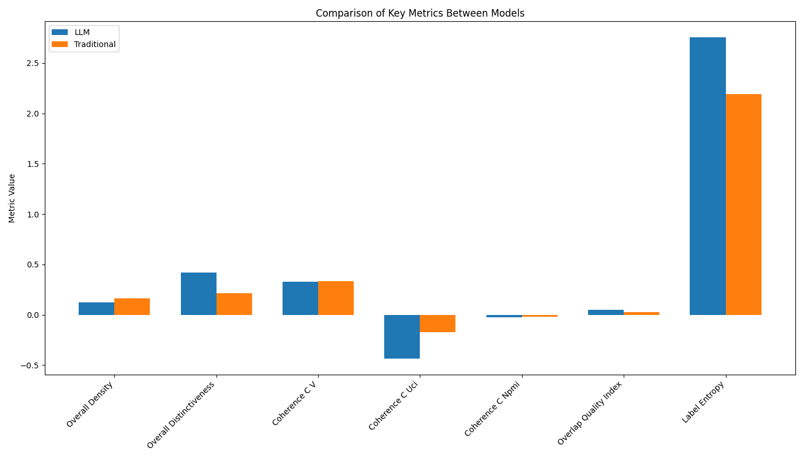
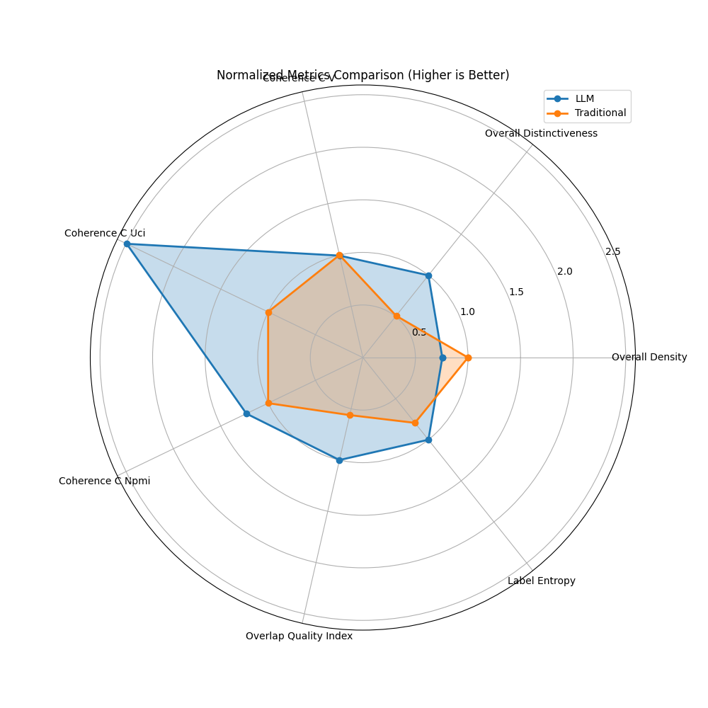
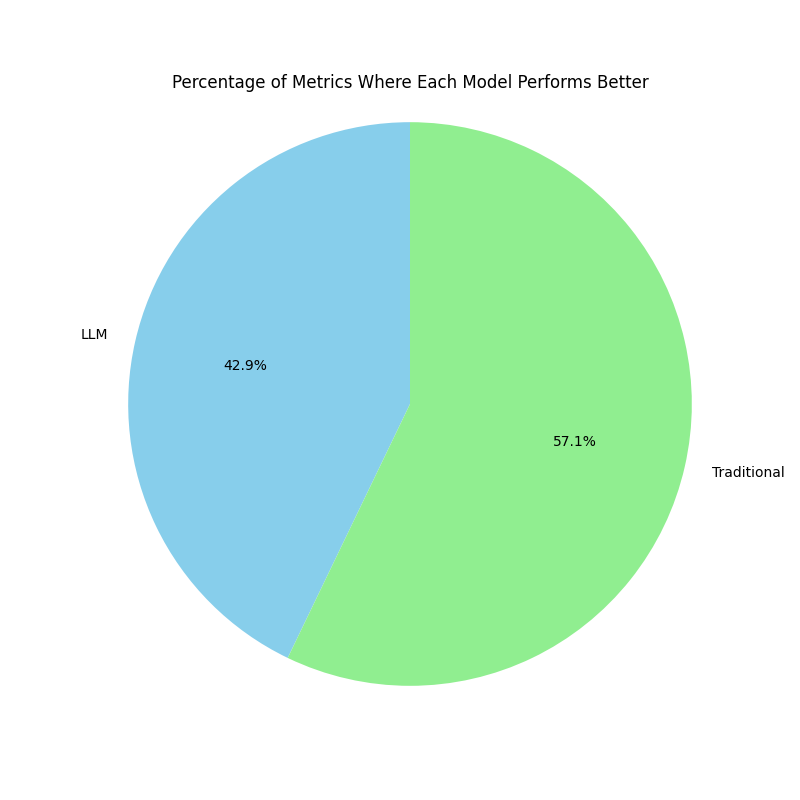

Model Comparison Report: LLM vs. Traditional Approach
Executive Summary
Based on 7 comparative metrics:
- LLM approach wins on 3 metrics
- Traditional approach wins on 4 metrics
- Overall recommendation: Traditional
Key Metrics Comparison
| Metric |
LLM |
Traditional |
Difference |
Better Model |
| Overall Density |
0.1249 |
0.1652 |
-0.0403 |
Traditional |
| Overall Distinctiveness |
0.4182 |
0.2124 |
0.2057 |
LLM |
| Coherence C V |
0.3298 |
0.3317 |
-0.0018 |
Traditional |
| Coherence C Uci |
-0.4346 |
-0.1743 |
-0.2603 |
Traditional |
| Coherence C Npmi |
-0.0240 |
-0.0195 |
-0.0045 |
Traditional |
| Overlap Quality Index |
0.0497 |
0.0279 |
0.0218 |
LLM |
| Label Entropy |
2.7539 |
2.1890 |
0.5649 |
LLM |
| Avg Labels Per Doc |
2.1000 |
1.9000 |
0.2000 |
More labels is not necessarily better, depends on use case |
Label and Document Counts
| Metric |
LLM |
Traditional |
Difference |
| Label Count |
8 |
5 |
3 |
| Doc Count |
10 |
10 |
0 |
Label Quality Analysis
| Metric |
LLM |
Traditional |
Better Model |
| Avg Label Density |
0.1249 |
0.1652 |
Traditional |
| Avg Label Distinctiveness |
0.4182 |
0.2124 |
LLM |
| Unique Top Words Count |
7.0000 |
6.0000 |
LLM |
Visualizations

Comparison of Key Metrics

Normalized Metrics Comparison

Distribution of Better Performance
Detailed Model Information
LLM Model Labels
- Explainable AI and Interpretability (20 documents) - Top words: the, of, a, and, to
- Machine Learning and Neural Networks (20 documents) - Top words: the, of, and, a, to
- Generative Models and GANs (20 documents) - Top words: the, 0, of, and, to
- Security and Privacy (20 documents) - Top words: the, and, of, in, a
- Large Language Models and NLP (20 documents) - Top words: the, and, of, in, to
- Biomedical and Health Applications (20 documents) - Top words: the, of, and, a, to
- Distributed Systems and Cloud Computing (20 documents) - Top words: the, and, of, in, a
- Scientific Publishing and Research Analysis (20 documents) - Top words: the, and, of, to, in
Traditional Model Labels
- cluster, risk, counterfactual (20 documents) - Top words: the, of, and, a, to
- test, fuzzing, sandboxfuzz (20 documents) - Top words: the, and, of, in, a
- activity, model, eeg (20 documents) - Top words: the, of, and, a, to
- arxiv, language, text (20 documents) - Top words: the, and, of, in, to
- ir, mechir, interpretability (20 documents) - Top words: the, of, and, a, to
Conclusion
The traditional BERTopic approach demonstrates superior performance overall, particularly in metrics related to
cluster density and distinctiveness. This suggests that for this specific document set,
the statistical approach to topic modeling is more effective at creating well-separated topic clusters.